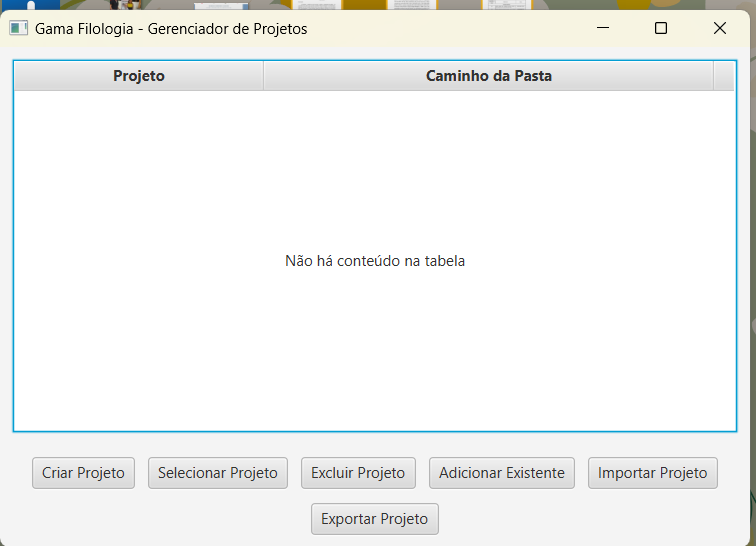
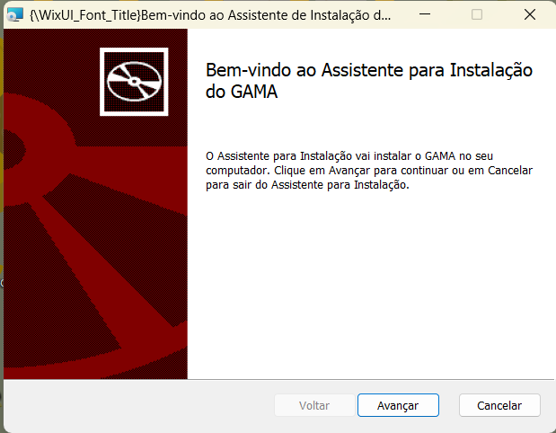
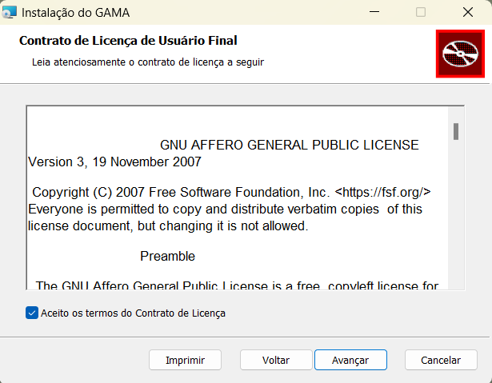
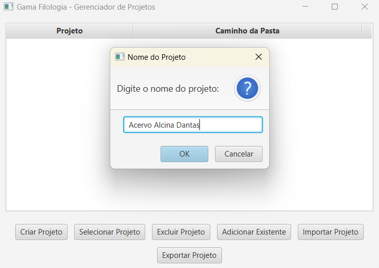
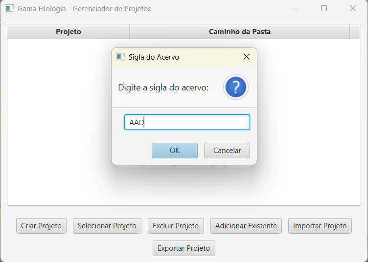
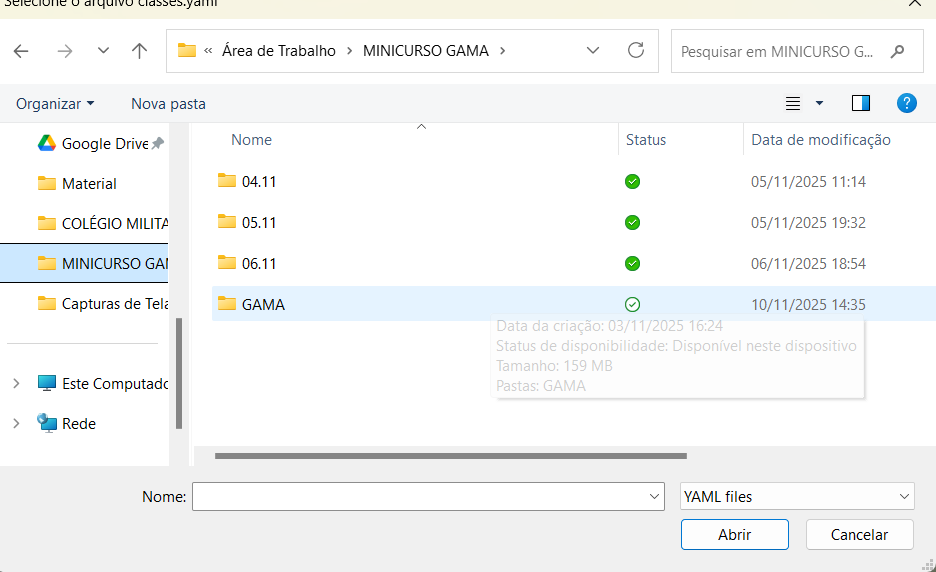

Gerenciamento de Documentos Filológicos
Software livre para organização, transcrição com IA e exportação de documentos do Acervo Alcina Dantas (AAD). Gratuito, open-source, sem instalação.
Extraia e execute GAMA.exe — sem instalar nada.
Tudo que você precisa para edições críticas e estudos filológicos
Formulário detalhado com classes, subclasses e geração automática de código único (NBR 6023).
Transcrição automática de fac-símiles via Claude, GPT-4o, AWS Bedrock, Ollama, LM Studio ou Tesseract OCR local.
Gera Inventário completo e Fichas-Catálogo em formato Word (.docx) prontas para publicação.
Visualização lado a lado com destaque visual: amarelo = texto diferente; vermelho = bloco ausente.
Suporte a documentos mono e poli-testemunhais, com indexação de pessoas e instituições citadas.
Dados salvos localmente em JSON. Sem nuvem obrigatória, sem conta, sem assinatura.
Veja o GAMA em ação






Sem Java, sem configuração — pronto em 3 passos
Clique em "Releases" no GitHub e baixe o .zip mais recente.
Extraia o conteúdo para qualquer pasta no seu computador.
Dê duplo-clique em GAMA.exe. Pronto!
Requer Windows. Java JRE incluído no pacote.
O GAMA foi desenvolvido para o projeto "Acervo Alcina Dantas (AAD): interação entre filologia, arquivística e TICs" de Pollianna dos Santos Ferreira Silva e Rosa Borges. Concebido a partir de uma perspectiva dialógica entre a Filologia e as TICs.